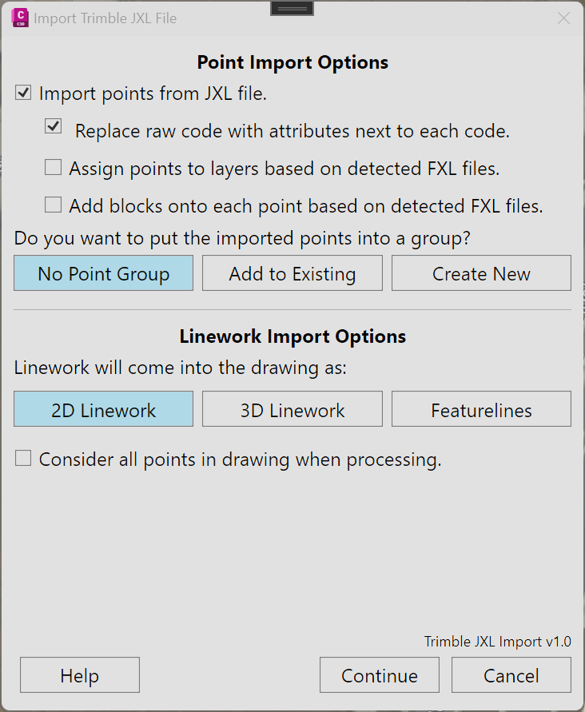

1.0
1.0
This command is a work in progress. Features marked as "Planned Feature" are not implimented and subject to change.
The ImportJxlFile command allows the technician to directly import Trimble© raw data file. The technician will then be able to do a multitude of tasks with minimal input, including:
Once the command is activated, the technician will select a .jxl file. Currently, only one can be processed at a time. Once the technician accepts the file, the options dialog will be opened. This dialog allows the technician to modify the import workflow, add tasks, or remove tasks, as desired.
| Command | Description |
|---|---|
| Import points from JXL file | Allows the technician to either enable or disable point creation from the JXL file. |
| Replace raw code with attributes next to each code | If enabled, the attributes measured in the field will be added directly after the code. For example, a point with the code BLDG1 OHG will be imported as “BLDG1 (CBS 1) OHG.” The raw code will still be available in the point properties. |
| Assign points to layers based on detected FXL files Planned Feature | If enabled, the points will be assigned to layers based on the FXL indicated as active in the JXL file. If the layer does not exist in the current drawing, information from the FXL file will be used to create the layer. |
| Add blocks onto each point based on detected FXL files Planned Feature | If enabled, each point with a definable block will get said block created on top of, but not connected to, the point. If the block does not exist in the drawing, the program will search through the block inventory database to determine if a block can be imported. If a block cannot be imported, this will be communicated in the import report generated at the end of the process. |
| Do you want to put the imported points into a group Planned Feature | No Point Group: No point group will be created. Add to Existing: A combo box will appear with a list of existing point groups. Create New: A textbox will appear to enter the name of the point group. |
Example of "Add to Existing" popup.
Example of "Create New" popup.
| Command | Description |
|---|---|
| Linework will come into the drawing as Planned Feature | 2D Linework: The linework will come in as 2D polylines. Arcs will be defined as such. All linework will be at elevation 0.000’. 3D Linework: The linework will come in as 3D polylines. Each vertex will be elevated to the source point’s elevation. Arcs will be subtended holding a mid-ordinate distance of 0.500’ feet horizontally and elevations prorated between vertexes. Feature lines: The linework will come in as Civil 3D feature lines. Each vertex will be elevated to the source point’s elevation and elevation points inserted along curves as required. |
| Consider all points in drawing when processing Planned Feature | The processor will include point numbers of existing points when creating linework. Useful for when “JOIN” commands reference outside point numbers. |
| Button | Description |
|---|---|
| Help | Opens this help page URL in your preferred browser. |
| Continue | Accepts the options as you have set and begins processing. |
| Cancel | Cancels the command without processing anything. |